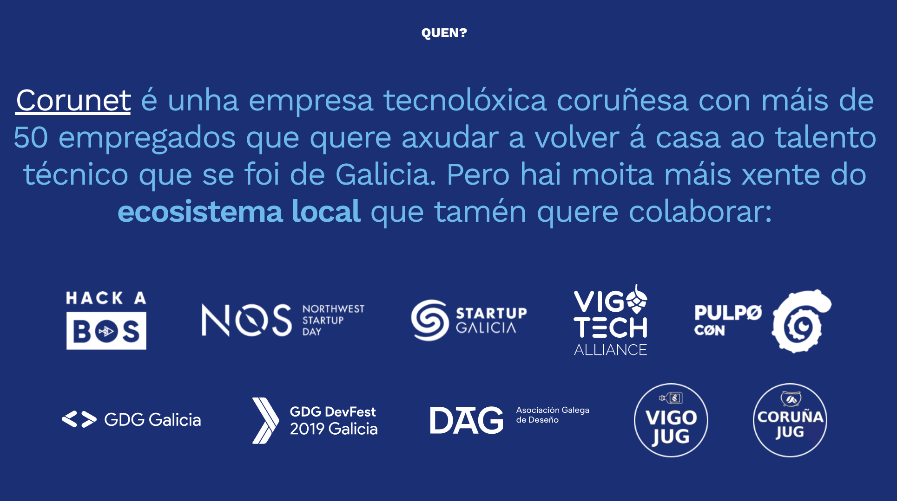
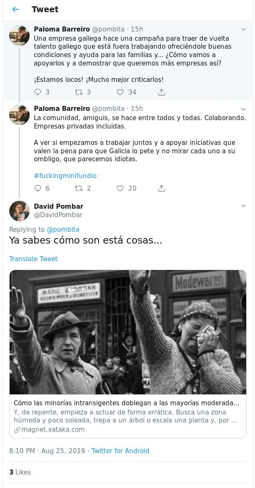

Onte aquí, un minifundista galego, xa a liou parda en twitter. Onte lanzouse a web de proxecto Morriña, unha iniciativa privada e cun claro fin económico, que quere atraer talento a Galicia. A idea, en si, esta xenial, apadriñada pola empresa Coruñesa Corunet, e pola startup madrileña Mandfred Tech.
Coñezo varios casos de xente que voltou, sei que é unha prioridade para moitas empresas de aquí, e mais, recordo sentarme cun empresario da zona, para cando saliu o Brexit, para que lle dixera que cousas podería facer para voltar xente que estaba en Londres.
Miña tristeza viu, cando na landing da páxina aparecía o seguinte texto, co logo de VigoTech.
Cando foi que se fundou Vigotech, unha das premisas era que non tivera integración con ningún tipo de empresa externa, era un metagrupo para dar cabida a todas as empresas, cunha serie de regras, pero que non se facía publicidade con elas, e tampouco colaboracións, calquera cousas que tivera un fin económico debería ser tratado polo grupo que estaba interesado (No meu caso A Industriosa e Vigolabs). O paragrafo, segundo eu leo, dicía que Vigotech esta interesada en que a xente volva a traballar a Corunet, que eu quero que a xente volva, pero a Corunet ou calquera outra empresa, esta iniciativa non é de comunidade, é de ámbito privado cun claro fin económico.
Update: Dous logos xa non estan, o de Vigotech, e o a conferencia PulpoConf.
Non se poden criticar a empresas privadas que colaboran
Un dos chíos que me chegou onte, claro por facer cousas, xa estas libre de críticas, inda que un dos valores dos que se fundou Vigotech este quebrado, ese logo asociado a unha empresa era o que non se quería dende o inicio.
Corunet, tampouco foi unha empresa que colaborara activamente con Vigotech, non recordo ver meetups co seu patrocinio, unha entrada no seu blogue falando de Vigotech, ou das meetups de Vigo, iso foi o que mais me chocaba, que unha empresa que non recordo que colaborara co ecosistema local, usara o noso logo. Si que recordo que colaborara con outros eventos, pero cos de Vigotech, nunca.
Para min, Corunet podería facer moito mellor marketing, se tivera unha sección onde puxera, estas son as charlas que deron os nosos empregados a través dos múltiples eventos que temos en Galicia, iso si que é bo marketing e unha moi boa colaboración coa comunidade! Ou dicir, se entras en Corunet, regalámosche a entrada para a caralluda AtlanticaConf, pero non, puxeron o logo dicindo que bonito é o todo.
Bernal comentou que non colaboraba agora, que xa colaborarían. Paréceme correcto, se inda non colabórache, e mola, despois de tantos anos, é unha pena, o traballo na comunidade técnica non naceu onte, Vigotech naceu xa fai anos. Na primeira hackathon que organicei unha startup viu a pedir facer un speech para poder contratar, sen cartos, díxenlle que si, que non problema. Nas seguintes edicións, nunca quixeron colaborar, pero sempre aparecían polo café para dicir o ben que traballaban. Dende aquela, sempre valoro os feitos, nunca o futuro.
Permiso para poñer el logo
David Bonilla, de Manfred Tech, comentou que o logo si que estaba pedido, e que estaba posto dado que Vigotech o autorizou, isto é correcto. Tamén o que me chegou, e o que se falou no chat de Vigotech, e que o tema vendeuse que sería a ser unha web de ofertas de traballo de calidade Galegas e globais, non unha sección de ofertas tan focalizada nunha soa empresa a través dunha soa empresa de recrutamento.
Que volvo a dicilo, o proxecto é fermoso e apaixonante, pero dende o meu punto de vista, faltou parte de comunicación en vender un proxecto de comunidade que non é tal.
Facer comunidade, vivir da comunidade
Eu con 16 anos organizaba carreiras de slot, con 18 empecei a estar nas cunetas dos rallyes axudando, con 20 xa estaba con tarefas dentro dos rallyes. Un día un bo amigo Víctor (59 anos) díxome, Eloy, nos rallyes traballa demasiada xente de gratis e algunha xente gaña algúns cartos, os que gañan cartos sempre teñen algún interese, e iso hai que xestionalo ca maior prudencia posible, a corda é tan fina que pódese romper en calquera momento.
Para min, David fixo, e fai, un traballo enorme pola comunidade informática española. O seu incansable poderío e constancia e admirábel, e son moitas as cousas boas que se poden dicir del! Agora a súa principal liña de traballo é o recrutamento de talento técnico, creou unha comunidade de mais de 10.000 Tarugos, a liña de separación do seu traballo é moi fina. Quen fai cousas equivocase! para min ese logo estaba mal posto, polo fin do proxecto, pero cada un ten unha opinión, eu expoño a miña con respecto ao todo mundo, cada un terá a súa opinión ao respecto. (As miñas desculpas xa as ten)
FAQ:
Eloy, sabes o difícil que é montar algo?
Si, igual non me coñeces, traballei en Vigo, montei meetups, hackathons de centos de persoas, fun participe do primeiro medialab de Vigo, propuxen un plan tecnolóxico marítimo as catro organizacións de Vigo, o que ocasionou varios problemas que algún día contarei.
Ademais de iso, tamén organicei rallyes, campeonatos de slot, axudo a rapaces cos proxectos de fin de carreira, poño en contacto a empresas cando algún comenta que ten unha deficiencia en certas cousas. Sei o traballo que da montar algo de este tipo e o difícil que é facer comunidade.
Quen me coñece sabe que non paro de facer cousas para a comunidade, e mais, o noso neno ten algo menos de nove meses, meus amigos teñen unha aposta para ver cando me meto no AMPA do colexio, se alguén lle preocupa esta terra é a min.
Eloy, o problema so viu de Vigo, es un localista?
Non, e mais, son natural de Mos, o principal concello afectado polo localismo aferrimo do amado líder de Vigo, son moi contrario o localismo. Cando podo axudo as comunidades de outros sitios, este ano despraceime a Coruña a dar unha charla para axudar a un bo amigo, e en Outubro darei dúas mais en Coruña, este ano non din unha soa charla en Vigo. A xente de Coruña sempre me axudou, e a miña etapa de vivir e traballar na Coruña é das mais bonitas da miña vida.
Eloy, que mal esta que colaboren as empresas?
Nada, eu son dos que mais dixo para que Vigotech tivera empresas, creo que é esencial ter unha certa integración e que a comunicación sexa fluída, no seu día decidiuse que fora separado, e eu nos grupos aos que pertencía tratei de ter integración con empresas, e mais, moitos me criticaron por facer demasiadas cousas con empresas.
O detalle do logo, e que empresas que colaboraron fortemente con Vigotech e grupos, miraron como unha empresa de Coruña o usaba e eles non podían, a miña tristeza viña mais encamiñada por estas empresas que polo uso de Corunet do logo.
Paloma Barreiro e David Pombar:
Vou facer unha sección especial a estas dúas persoas, as que admiro, por todo o que fixeron pola comunidade galega, pero este chío molestoume bastante.
O chío de Paloma, sen nome, pero ben adicado a min (E mais, eu non a sigo, e foi un amigo o que me avisou) quedaba claro o que pensaba. Eu a Paloma por todo o que fixo en startupgal, polo NosDay por levantar Vostok nada lle podo reprochar. Creo que a comunidade faixe con humildade, para min ese chío ten de todo menos humildade, pero bueno, cada un pode mellorar a comunidade como mellor lle pareza. Ela segue tendo toda a miña admiración polo traballo que fixo e que esta a facer.
David contestoulle un link, para min desafortunado, se a Paloma teñolle admiración a David Pombar soamente palabras de gratitude, cando montaba todo en Vigo, non foi unha ou dúas chamadas as que lle din para pedirlle axuda, moitos dos emails que lle mandei viñeron de volta cun contacto que necesitaba para facer unha meetup, patrocinio ou o que fora, moito do éxito de Vigotech foi parte grazas a el. Responder a ese chío cun link onde se fala como as minorías nazis, doeume, pero para el só teño palabras de agradecemento.
(E si, que dixo Paloma que ese tweet non poñía Eloy Coto, que era algo xeral, que de nada se ten que desculpar, pero a poucas palabras bo entendedor)
Eu deixo de responder a todo isto, ao final o mais afectado e Orestes, esa persoa que tanto bo fixo por esta terra que el apadriñou, eu creo que foi un error na mensaxe, alguén se equivocou eu só puxen o meu punto de vista tratando de ser o mais formal que puiden, recibir críticas é unha sorte!
Volvo a repetilo, a idea de proxecto é xenial, Corunet é unha empresa boa (temos moitos amigos en común) e David Bonilla fixo, e fai, moitas boas cousas pola comunidade técnica.
E se alguén quere seguir falando disto, o meu teléfono é 678 09 67 20 e o meu email: eloy.coto neste dominio, en público xa non contestarei nada mais, ao final dánanos a todos. Desculpas a quen esta molesto, a miña intención era sacar algo que non me pareceu ben, sen intentar caer en facer a crítica fácil, como todos, eu tamén podo equivocarme :-)
Abur!